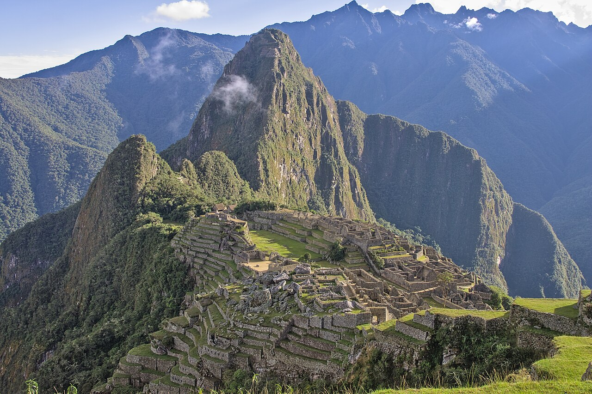
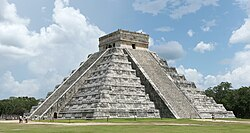
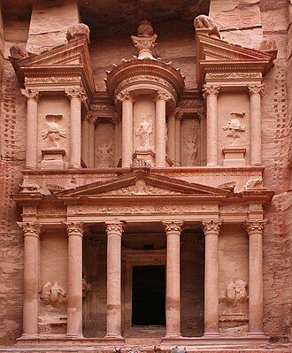
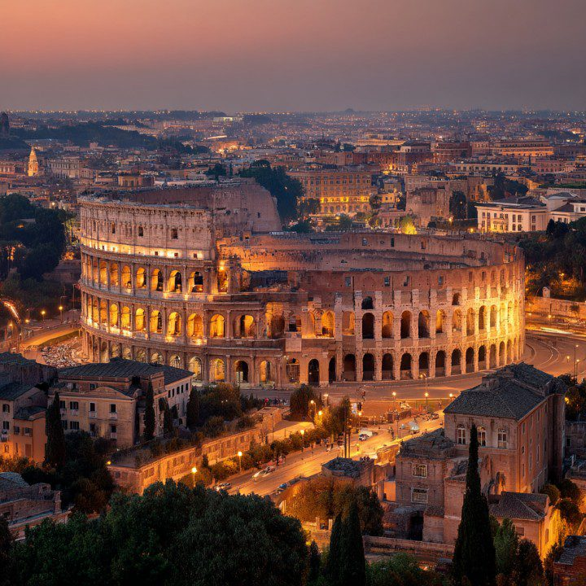

Bucket List
Ancient sites and historic places I want to visit, and some I already have checked off.
Machu Picchu
Click to learn more

A 15th-century Inca citadel built around 1450 in the Andes mountains of Peru. Abandoned during the Spanish conquest and rediscovered in 1911.
I want to see how the Incas built an entire city into the mountainside — the architecture alone shows how advanced this civilization was.
Great Pyramid of Giza
Click to learn more

Built around 2560 BCE as a tomb for Pharaoh Khufu. The oldest and largest of the three pyramids of Giza, and the only Wonder of the Ancient World still standing.
The pyramids fascinate me because of their ancient engineering and massive scale. They are lined up with specific constellations and have wild mathematical proportions that still are not fully explained.
Angkor Wat
Click to learn more
A massive temple complex in Cambodia built in the early 12th century by the Khmer Empire. Originally dedicated to the Hindu god Vishnu, later converted to a Buddhist site.
I love the detailed architecture, which is unique to the region. It's one of the largest Hindu temples in the world and the cultural significance is incredible.
Chichen Itza Visited ✓
Click to learn more

A pre-Columbian Mayan city in Yucatan, Mexico, built between the 5th and 13th centuries. Famous for the El Castillo pyramid and its acoustic engineering. Clap at the base and you hear the call of a quetzal bird in response.
I've crossed this one off the list. The Mayan history and the incredible sound design made the visit unforgettable.
Petra
Click to learn more

An ancient city in southern Jordan carved directly into red sandstone cliffs by the Nabataeans around the 4th century BCE. Lost to the Western world for centuries before being rediscovered in 1812.
The city carved into the cliffs looks unreal - plus many of my favorite movies were filmed there.
Rome
Click to learn more

The historical capital of the Roman Empire and seat of Roman civilization for over a thousand years. Home to the Colosseum, Roman Forum, and Pantheon — some of the best-preserved ancient structures in the world.
I've always wanted to visit because of the mix of ancient history, famous architecture, and historic landmarks. Roman civilization is my favorite.